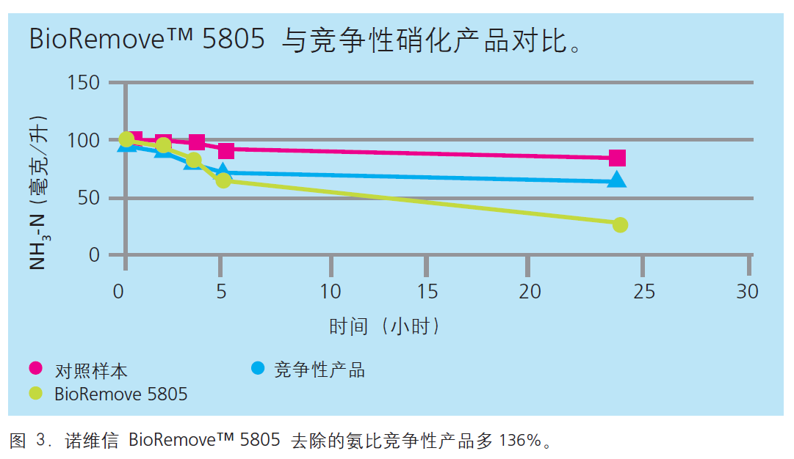

某家化工厂氨氮排放超标，分析表明硝化系统崩溃。在诺维信工程师的建议下，在10天时间内，以逐渐减少用量的方式将氨氮去除菌BioRemove 5805直接加入到曝气池中，以确保完全启动硝化作用过程。
某家化工厂氨氮排放超标，分析表明硝化系统崩溃。在诺维信工程师的建议下，在10天时间内，以逐渐减少用量的方式将氨氮去除菌BioRemove 5805直接加入到曝气池中，以确保完全启动硝化作用过程。仅仅 5 天之后，就会 实现硝化作用。
BioRemove 5805为功效最迅速、最可靠的硝化作用解决方案。图 3 显示的是 BioRemove 5805 与领先的竞争性硝化产品的对比情况。经过 24 小时的台架试验之后，与竞争性产品相 比，BioRemove 5805 可多脱去 136% 的氨。它有助于防止违反与氨相关的许可，并可简化污水处理流程。利用 BioRemove 5805 进行生物强化处理会使硝化法更为强大，从而使工业污水处理厂能够承受住更高负荷的有毒污水流以及含有高浓度氨或其他氮化合物的污水流。BioRemove 5805 通过缩短流程紊乱之后的恢复时间和降低突加荷载对出水水质的影响，从而有助于确保遵循法规。BioRemove 5805 可促进持续、可靠的处理，并减少进行与硝化作用相关的操作变更的必要性。它有助于在低温情况下实现简便操作。


半点科技(苏州)有限公司专业从事环境保护，依托丹麦诺维信全球领先的生物增效技术，和其他多种高度集成的污水处理设备，利用化学和微生物等手段帮助提高和改善系统的COD、BOD、氨氮、总氮去除效率，除臭，污泥减量等，成为客户解决水、气、泥治理的技术服务商和产品供应商。